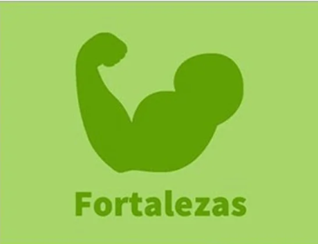

¿QUIÉN SOY? |
|
|---|---|
|
|
Soy un chico nacido en 1991 residente en Venta de Baños(Palencia) que actualmente cursa 2º de asir en el
centro Don Bosco Salesianos de Villamuriel. Elegí este camino tras un consejo de personas cercanas a mi y fué secundado por mi pasión a la informatica y al mundo de los videojuegos. En este mundillo he grabado un programa de radio con unos amigos llamado "El legado del bit" que trata sobre el analisis y las noticias actuales del mundo de los videojuegos. Actualmente dada la situación del covid-19 no hemos podido ni grabar de forma presencial en ningún evento pero esperamos recuperarlo proximamente. Otra de mis aficiones es el mundo del cine con peliculas como Terminator 2 , el padrino, o la saga del Señor de los anillos aunque actualmente lo que más veo son las peliculas de marvel dada mi creciente afición por el mundo del comic. |
LOGROS
A lo largo de mi vida he conseguido varias titulaciones:
| TITULOS ACADEMICOS | |
|---|---|
| GRADOS | TITULOS COMPLEMENTARIOS |
| Gestión administrativa | Título oficial de la escuela de idiomas (A2) |
| Gestión de transporte y logistica | Carnet de carretillero |
| 1º de asir superado (actualmente cursando 2º) | Carnet de conducir |
- Durante el curso de 1º de asir he cosechado una media en los trabajos de 8,5/10 destacando una presentación y y organización notoria además de un contenido muy completo
- Dispongo de una cantidad diversa y considerable sobre la virtualición en los programas VMWARE y Virtualbox
- Amplios conocimientos del lenguaje html/css y un acercamiento a javascript y c++
- Conocimientos diversos sobre securización y encaminamiento de la red
FORTALEZAS
Algunas de mis cualidades:
- Alegre y positivo a la par que creativa.
- Me considero una persona cumplidora,respondable y comprometida con el trabajo a realizar.
- Soy una persona sociable.
- Tengo aptitudes para el trabajo en equipo como aportación de ideas y pensamiento de tipo lateral
 OBJETIVOS
OBJETIVOS
Mi objetivo es la ampliación de conocimientos para poder dejar huella en el mundo de la informática y conseguir crear algo innovador y revolucionario con esos conocimientos para poder dar soluciones o facilidades en determinados aspectos de nuestra vida. En determinado punto me gustaría programar mi propio videojuego para poder hacerlo a mi gusto y que además más gente pueda disfrutar algunas de mis ideas en este ambito de ocio y entretenimiento cada vez más en alza.